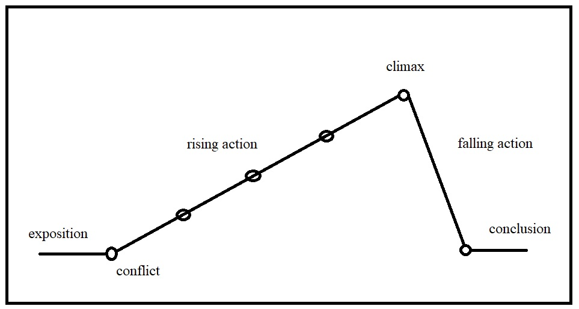

We actually use the word, plot, as a verb when drawing points on a map, or graph. We "plot a course" from one point to another, or plot data points on a graph.
You may be familiar with the following method of representing the basic structure of a story:
This structure consists of a sequence of interconnected events. That sequence of events is the plot of the story that is being told.
Those events don't need to be revealed to us in chronological order. For example, elements of a character's past, which may be useful exposition for the story, might be revealed to us just before the climax. Perhaps the character in question wasn't even aware of these details. Also, events within a story can have dramatically different feelings and emotions attached to them, depending on the point of view, or how they are revealed to the audience. These choices fall under the purview of the narrator.
The narrative is how the story is told.
A road-trip could be a useful analogy: The stops along the way, going from point A to point B, is the plot. The experience itself is the narrative - the music, the chatting, the feelings we get from the sights we see along the way.
Try to discern the difference between plot and narrative in the following readings:
The Tell-Tale Heart by Edgar Allan Poe (1843)
A Rose for Emily by William Faulkner (1930)
Back to literary terms.